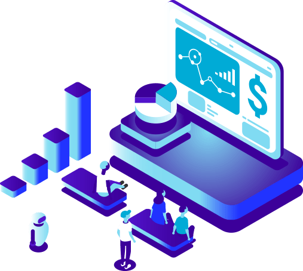
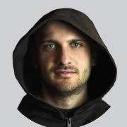

Sobre o projeto
As opções são um derivativo financeiro vendido por um subscritor de opções a um comprador de opções. O contrato oferece ao comprador o direito, mas não a obrigação, de comprar (opção de compra) ou vender (opção de venda) o ativo subjacente a um preço acordado durante um determinado período de tempo ou em uma data específica. O preço acordado é chamado de preço de exercício. Existem muitos tipos de opções. Uma opção pode ser exercida a qualquer momento antes da data de vencimento da opção, enquanto outras opções só podem ser exercidas na data de vencimento (data do exercício). Exercer significa utilizar o direito de comprar ou vender o título subjacente.
Soa tão difícil! É por isso que este projeto é dividido em duas partes: exchange de opções e seguradora..
-
Traders e fundos hedge concluem acordos sobre compra e venda de opções de ações
-
Outros clientes, que não querem saber como funciona a opção, podem adquirir seguro para crescimento ou queda das principais criptomoedas.
Um cliente paga um seguro no valor de 0,1 Bitcoin pelo depósito no valor de 3 Bitcoins. Se o preço diminuir em 15% dentro de 3 dias, ele recebe o direito de obter o seguro no valor da queda do depósito - 0,45 Bitcoins. No caso do evento de seguro, a CRYPTOCOIN INSURANCE paga ao cliente o seguro dos seguros obtidos anteriormente. Se não houve nenhum evento de seguro, o seguro pago pelo cliente será a receita da empresa.
A CRYPTOCOIN INSURANCE permite que você assegure quedas de preços ou riscos de crescimento para grandes criptomoedas.

Problema: Não há solução para garantir que o depósito em Bitcoin ou Ethereum caia. Ao mesmo tempo, neste mercado, há uma maior volatilidade que faz com que as pessoas tenham medo de armazenar grandes fundos na criptomoeda. Por outro lado, as grandes empresas demoram a entrar no mercado (por exemplo, aceitar pagamentos em uma criptomoeda) pelo mesmo motivo.
Solução: A exchange começará a operar com 5 criptomoedas que têm o mercado máximo. Além disso, à medida que a demanda e o volume de negócios aumenta, adicionaremos outras criptomoedas. A CRYPTOCOIN INSURANCE vende seguro de crescimento e quedas de Bitcoin ou de Ethereum. Assim, protege seu risco. Sem nenhum concorrente no mercado permite manter uma margem significativa ao nível de 20%. A CRYPTOCOIN INSURANCE reorganiza o vende/compra seu próprio risco como opções em sua própria exchange.
CRYPTOCOIN INSURANCE lança a primeira exchange de opções de criptomoedas do mundo

Problema: Não há exchange especial de criptomoedas onde você pode comprar/vender opções. O principal medo de criar uma bolsa de valores como essa é o aumento da volatilidade. Parece a todos que lidam com opções de ações, petróleo ou trigo que os riscos são enormes.
Solução: O principal receio das opções no mercado de criptomoedas é o aumento da volatilidade. Mas é realmente assim?
Vamos considerar um exemplo com o mercado de ações habitual. Por exemplo, um cliente vendeu uma opção para uma ação da ZZZ Company. Hoje é sábado e o mercado está fechado. Há boas notícias inesperadas e a ação cresce de 2 a 10 vezes na abertura do mercado na segunda-feira. Por sua vez, o vendedor de opções sofre grandes perdas.
A vantagem do mercado de criptomoedas, ao contrário do mercado de ações ou commodities, é que ele opera 24 horas por dia. E durante todo o período de sua existência (cerca de 10 anos), nunca houve notícias que mudaram rapidamente o preço do Bitcoin ou do Ethereum em pelo menos 30-50%. Na verdade, se for apenas sobre blue chips (moedas), o mercado de criptomoedas é muito mais seguro para os vendedores de opções do que outros mercados aos quais nos acostumamos.
Opções permitem vendas a descoberto

Problema: Ainda não há oportunidade de venda a descoberto no mercado de criptomoedas. Ninguém pode vender uma criptomoeda que esteja fisicamente ausente na conta dentro de um curto período de tempo. Isso reduz a capacidade dos especuladores de suavizar as flutuações de preço em outros mercados. Por sua vez, provoca o aumento da volatilidade e as consequências enumeradas acima da cl. 1 e 2.
Solução: Sem ter Bitcoin ou Ethereum físico, é possível obter uma opção para sua queda, e realmente realizar a venda a descoberto. Essa oportunidade traz ao mercado muitos novos traders, investidores e especuladores, bem como fundos de hedge que investem dinheiro não apenas no crescimento, mas também na queda dos mercados.
Porque agora?
-

Existem cerca de mil exhanges e nenhuma exchange de opções
-

O rápido crescimento dos juros de fundos hedge para o criptomercado não é satisfeito por causa da falta de opções e da possibilidade de vendas a descoberto
-

Montamos uma equipe de profissionais que sabem tudo sobre o mercado de opções e estão prontos para fazer mudanças não revolucionárias, mais inovadoras
Tamanho do mercado
A capitalização do mercado de criptomoedas equivale a centenas de bilhões de dólares. O volume diário de trading está no nível de $10-20 bilhões.
O tamanho do mercado de opções de commodities e ações difere de país para país e é de 1-5% do valor do mercado de ativos básicos. Assim, podemos calcular o volume potencial do mercado de opções para criptomoedas básicas no valor de $ 50-250 milhões por dia.
No entanto, os cálculos não levam em conta que as opções realmente oferecem a oportunidade de vendas a descoberto que hoje não podem ser realizadas nas exchanges de criptomoedas. Isso contribuirá para o aumento adicional na demanda dos vendedores pelo instrumento.
Monetização

A CYPTOCOIN INSURANCE tem duas fontes principais de renda
-
Exchange de Opção
O lucro é gerado como uma comissão comercial de cada operação em opções de compra ou venda. É 0,5% por transação ou 1% por círculo para cada uma das partes da transação.
Tendo em conta a volatilidade das opções e as enormes oportunidades de lucro, esta comissão não é significativa para os participantes do mercado. No entanto, permite que a exchange tenha uma renda alta em comparação com as exchange habituais de criptomoedas devido à total falta de concorrência. No caso de concorrentes no futuro, o valor da comissão da exchange pode ser proporcionalmente reduzido.
-
Companhia de seguros
A renda é gerada pela venda de seguros de crescimento/declínio da criptomoeda.
Potencial de crescimento de token CCIN
A empresa CRYPTOCOIN INSURANCE Company desenvolveu um modelo simples e compreensível para o aumento do valor do token CCIN. 30% de cada comissão obtida pela exchange de opções será direcionada ao fundo de liquidez. No próximo mês, a CRYPTOCOIN INSURANCE envia esses fundos para comprar tokens CCIN do mercado e os queima.
Este modelo de negócio é adotado unicamente no interesse de nossos investidores. A promessa de comprar tokens de lucros futuros pode não ser transparente. Além disso, a Exchange ou a plataforma podem nunca ter o lucro fisicamente. No caso dos tokens da CRYPTOCOIN INSURANCE, os investidores sabem exatamente que cada transação de compra/venda de opção gera o fluxo de caixa usado para comprar tokens.
Isso permite mudar constantemente o equilíbrio do mercado e aumentar a demanda por tokens CCIN.
Se o faturamento for de $50 milhões por dia, a comissão para ambos os lados da transação será de $500.000 ou $15 milhões por mês. 30% desse valor ou $5 milhões são enviados mensalmente para comprar tokens CCIN do mercado.
100 000 000 tokens CCIN serão emitidos
Distribuição de token

75% ICO
18% Reservado para a equipe do projeto
5% Mentores
2% Bounty
| Preço dos tokens | 1,500 CCIN tokens = 1 ETH |
| Data da ICO | 1 de novembro de 2018 - 27 de dezembro de 2018 |
| Quantidade mínima de arrecadação | $0.5 M |
| Alvo principal da ICO | $5 M |
| Quantidade máxima de arrecadação | $10 M |
*Todos os tokens que não forem comprados quando ofertados são destruídos.
O token CCIN é comprado usando Bitcoins ou Ethereum.
Atribuição dos fundos arrecadados

50% Desenvolvimento e lançamento da opção
25% Fundo de reserva
15% Marketing
5% Serviços Jurídicos
5% Despesas Operacionais
Roteiro
-
Criando o conceito de assegurar movimentos do mercado de criptomoedas e a exchange de opções CRYPTOCOIN INSURANCE
Fevereiro de 2018 -
Formando a equipe do projeto
De Março a Abril de 2018 -
Pesquisa de mercado, definindo vantagens competitivas
Maio de 2018 -
Começando a se preparar para a ICO
Junho de 2018 -
Lançamento da exchange de opções com 5 criptomoedas
Fevereiro de 2019 -
Listando tokens CCIN e listando em exchanges de criptomoedas
Janeiro de 2019 -
ICO
Novembro a Dezembro de 2018 -
Campanha publicitária
Agosto-Outubro de 2018 -
Início da venda de seguro para o crescimento/queda do mercado
Março de 2019 -
Primeiro resgate de token do mercado e queima de tokens
Abril de 2019 -
Adicionando 3 novas criptomoedas
Maio de 2019 -
Volume de negócios diário de 10 milhões de dólares
Julho de 2019 -
Volume de negócios diário no valor de $ 50 milhões
Dezembro de 2019 -
Adicionando 2 criptomoedas (10 no total) à exchange
Setembro de 2019
Advisors
-
 Giovanni Casagrande
Giovanni Casagrande
Advisors
-

Giacomo Arcaro
Advisors
-
 Zahid Imran
Zahid Imran
Advisors
-
David Orban
Advisors
-
 Laura Zaharia
Laura Zaharia
Advisors
-
 Brennan Bennett
Brennan Bennett
Advisors
-
 Bogdan Fiedur
Bogdan Fiedur
Advisors
-
 Miikka Saloseutu
Miikka Saloseutu
Advisors
-
 Savio Gomez
Savio Gomez
Advisors
-
 Carlo Buonpane
Carlo Buonpane
Advisors
Equipe do projeto
-
 Denis Semin
Denis Semin
CEO
-
 Maksim Sizykh
Maksim Sizykh
CTO
-
 Stanislav Brzhozovskiy
Stanislav Brzhozovskiy
Head of Option
Trading Department -
 Ruslan Gadelshin
Ruslan Gadelshin
Community Manager
-
 Anastasia Kuzina
Anastasia Kuzina
Designer
-
 Anton Shumikhin
Anton Shumikhin
Front-end developer
-
 Vladislav Olerckhih
Vladislav Olerckhih
Back-end developed
-
 Dmitry Kazakov
Dmitry Kazakov
3D/2D artist